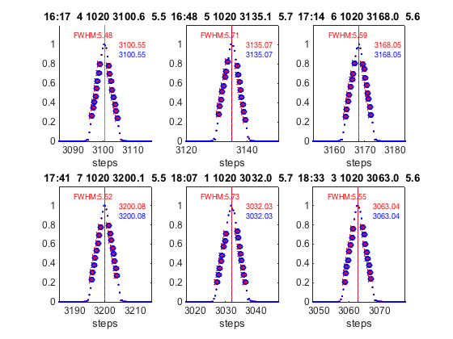
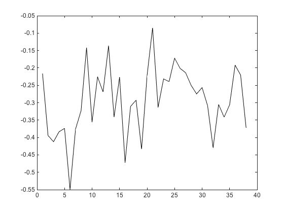

Contents
J={};
addpath(genpath('~/CODE/rbcce.aemet.es/iberonesia/matlab'))
addpath(genpath('matlab'))
path(fullfile(pwd,'matlab'),path)
set(0,'defaultfigurecolor',[1 1 1])
for i=1:10
J{i}=readb_j3dk('bdata185/B02716.185',sprintf('y%d',i));
if i==10
J{i}=readb_j3dk('bdata185/B02716.185','ya');
end
J{i}(2,:)=J{i}(2,:)/24/60+datenum(2016,0,27);
if i>8
J{i}(2,:)=J{i}(2,:)+1;
end
end
for i=11:24
ch=char(87+i);
sprintf('y%c',ch)
J{i}=readb_j3dk('bdata185/B02816.185',sprintf('y%c',ch));
J{i}(2,:)=J{i}(2,:)/24/60+datenum(2016,0,28);
end
n=1;
for i=25:30
J{i}=readb_j3dk('bdata185/B02616.185',sprintf('j%d',n));
J{i}(2,:)=J{i}(2,:)/24/60+datenum(2016,0,26);
n=n+1;
J{i}(16,:)=1020;
end
J{27}=J{27}(:,end-76:end);
n=1;
for i=31:35
J{i}=readb_j3dk('bdata185/B02716.185',sprintf('h%d',n));
J{i}(2,:)=J{i}(2,:)/24/60+datenum(2016,0,27);
n=n+1;
end
J{31}=J{31}(:,77:end);
DT =
2.9e-08
DT =
2.9e-08
DT =
2.9e-08
DT =
2.9e-08
DT =
2.9e-08
DT =
2.9e-08
DT =
2.9e-08
DT =
2.9e-08
DT =
2.9e-08
DT =
2.9e-08
DT =
2.9e-08
ans =
'yb'
DT =
2.9e-08
ans =
'yc'
DT =
2.9e-08
ans =
'yd'
DT =
2.9e-08
ans =
'ye'
DT =
2.9e-08
ans =
'yf'
DT =
2.9e-08
ans =
'yg'
DT =
2.9e-08
ans =
'yh'
DT =
2.9e-08
ans =
'yi'
DT =
2.9e-08
ans =
'yj'
DT =
2.9e-08
ans =
'yk'
DT =
2.9e-08
ans =
'yl'
DT =
2.9e-08
ans =
'ym'
DT =
2.9e-08
ans =
'yn'
DT =
2.9e-08
ans =
'yo'
DT =
2.9e-08
DT =
2.9e-08
j1a0 1077.31064 243 7 172 217 54 59 37rat 26.76098 27.14111 3017 88087.78
DT =
2.9e-08
DT =
2.9e-08
j3a0 868.4061 6 7 14 59 55 42 54rat 25.81065 26.09575 3085.6 593
DT =
2.9e-08
DT =
2.9e-08
DT =
2.9e-08
DT =
2.9e-08
DT =
2.9e-08
DT =
2.9e-08
DT =
2.9e-08
DT =
2.9e-08
measurement check
s=cellfun(@(x) size(x,2)',J)
s =
Columns 1 through 13
77 154 77 93 77 77 77 77 77 77 77 77 77
Columns 14 through 26
77 77 77 77 77 77 77 170 154 154 154 77 77
Columns 27 through 35
77 77 77 77 77 77 77 77 77
aux1=J{2}(:,1:77);
aux2=J{2}(:,78:end);
J{2}=aux1;
J{end+1}=aux2;
J{4}=J{4}(:,1+93-77:end);
medidas repetidas
for x=21:24
x2=J{x};
x3=x2(:,1:77);
x4=x2(:,end-76:end);
J{x}=x3;
J{end+1}=x4;
end
s=cellfun(@(x) size(x,2)',J)
m=cat(2,J{:});
sl=reshape(m,23,77,[]);
timex=squeeze(mean(sl(2,:,:)));
timex(8)
times=squeeze(std(sl(2,:,:)));
s =
Columns 1 through 13
77 77 77 77 77 77 77 77 77 77 77 77 77
Columns 14 through 26
77 77 77 77 77 77 77 77 77 77 77 77 77
Columns 27 through 39
77 77 77 77 77 77 77 77 77 77 77 77 77
Column 40
77
ans =
7.3636e+05
examples
f=figure
h={};
ha = tight_subplot(2,3,[.05 .05],[.1 .2],[.1 .1])
j_o3=find(sl(16,1,:)==1020)
for i=1:6
axes(ha(i));
h{i}=semilogyy(sl([15,6:12],:,j_o3(i))')
grid on
if i>3 xlabel('wavelength (A)'); end
if mod(i,3)==1 ylabel('Brewer raw counts'); end
set(h{i}(2),'LineWidth',2,'Marker','x');
set(ha(i),'Ytick',[10 100 1000 10000]);
axis('tight')
end
l1=legend(h{1},mmcellstr(sprintf('slit #%d |',[0:6]')),'Orientation','Horizontal');
set(l1,'Position',[0.077608 0.84228 0.83661 0.040429]);
suptitle(sprintf('Brewer ozone mode raw counts mic=%d',1020))
set(f,'tag','laser_log');
printfiles_report(gcf,'figures','Width',18,'Height',18);
f =
Figure (25) with properties:
Number: 25
Name: ''
Color: [1 1 1]
Position: [1000 918 560 420]
Units: 'pixels'
Use GET to show all properties
ha =
1933
1934
1935
1936
1937
1938
j_o3 =
25
26
27
28
29
30
h =
1×1 cell array
{7×1 Line}
h =
1×2 cell array
{7×1 Line} {7×1 Line}
h =
1×3 cell array
{7×1 Line} {7×1 Line} {7×1 Line}
h =
1×4 cell array
{7×1 Line} {7×1 Line} {7×1 Line} {7×1 Line}
h =
1×5 cell array
{7×1 Line} {7×1 Line} {7×1 Line} {7×1 Line} {7×1 Line}
h =
1×6 cell array
Columns 1 through 5
{7×1 Line} {7×1 Line} {7×1 Line} {7×1 Line} {7×1 Line}
Column 6
{7×1 Line}
sort by time
[i,j]=sort(timex);
datestr(timex(j))
Js=J(j);
m=cat(2,Js{:});
sl=reshape(m,23,77,[]);
timex=squeeze(mean(sl(2,:,:)));
ans =
40×20 char array
'26-Jan-2016 16:17:07'
'26-Jan-2016 16:48:47'
'26-Jan-2016 17:14:57'
'26-Jan-2016 17:41:11'
'26-Jan-2016 18:07:27'
'26-Jan-2016 18:33:41'
'27-Jan-2016 16:09:26'
'27-Jan-2016 16:30:24'
'27-Jan-2016 16:56:51'
'27-Jan-2016 17:17:46'
'27-Jan-2016 17:44:17'
'27-Jan-2016 19:51:19'
'27-Jan-2016 20:12:10'
'27-Jan-2016 20:39:25'
'27-Jan-2016 21:56:34'
'27-Jan-2016 22:22:58'
'27-Jan-2016 22:49:24'
'27-Jan-2016 23:10:12'
'27-Jan-2016 23:36:44'
'28-Jan-2016 00:03:59'
'28-Jan-2016 00:28:59'
'28-Jan-2016 00:50:08'
'28-Jan-2016 01:16:53'
'28-Jan-2016 01:38:57'
'28-Jan-2016 02:07:29'
'28-Jan-2016 02:29:21'
'28-Jan-2016 02:56:55'
'28-Jan-2016 03:18:51'
'28-Jan-2016 03:54:00'
'28-Jan-2016 04:15:51'
'28-Jan-2016 04:43:18'
'28-Jan-2016 05:05:20'
'28-Jan-2016 05:32:56'
'28-Jan-2016 05:54:50'
'28-Jan-2016 06:22:31'
'28-Jan-2016 06:44:36'
'28-Jan-2016 11:17:18'
'28-Jan-2016 11:39:15'
'28-Jan-2016 12:06:42'
'28-Jan-2016 12:28:19'
micrometer set
mic_=unique(sl(16,:,:))
mic_ =
1020
2087
2423
4174
6213
7711
Raw counts=
figure
semilogy(m(15,:),m(6:12,:),'.')
legend(cellstr(num2str([0:6]')))
grid
xlabel('wavelength (set)')
ylabel('Brewer Raw counts')
title('Brewer ozone mode')
& Brewer counts second
figure
norf=max(m(17:end,:)');
semilogy(m(15,:),matdiv(m(17:end,:),norf'),'.-')
legend(cellstr(num2str([0:6]')))
grid
xlabel('wavelength (set)')
ylabel('Brewer counts/sec')
title('Brewer ozone mode (counts/sec)')
yyaxis right
plot(m(15,:),m(7,:),'k-')
hold on
no linearity correction
nl=m(17:end,:);
for i=1:7
nl(i,:)=monitor_brewer(nl(i,:));
end
dk=m(18,:)./monitor_brewer(m(18,:));
lc=m(17:end,:)./nl;
lc=matadd(lc,-dk);
norf=max(lc');
figure
r=sortrows([m(15,:)',matdiv(lc',norf)],1);
ly=semilogy(m(15,:)',matdiv(lc',norf),'.');
set(gca,'Ylim',[1E-8,1])
set(ly(2),'Marker','x')
grid
xlabel('wavelength (set)')
ylabel('Brewer normalized counts/sec')
title('Brewer ozone mode corrected (counts/sec)')
l=legend(cellstr(num2str([0:6]')))
yyaxis right
p=plot(m(15,:),m(7,:),'k:.','MarkerSize',10);
ylabel('Dark raw counts')
l.String{end}='Dark'
l =
Legend (0, 1, 2, 3, 4, 5, 6) with properties:
String: {'0' '1' '2' '3' '4' '5' '6'}
Location: 'northeast'
Orientation: 'vertical'
FontSize: 10.8
Position: [0.80268 0.67619 0.084821 0.225]
Units: 'normalized'
Use GET to show all properties
l =
Legend (0, 1, 2, 3, 4, 5, 6, Dark) with properties:
String: {'0' '1' '2' '3' '4' '5' '6' 'Dark'}
Location: 'northeast'
Orientation: 'vertical'
FontSize: 10.8
Position: [0.77321 0.64524 0.11429 0.25595]
Units: 'normalized'
Use GET to show all properties
for counts/sec >12000
for i=1:7
for j=1:size(sl,3)
sl(16+i,:,j)= sl(16+i,:,j)./monitor_brewer(sl(16+i,:,j))/norf(i);
end
end
ozone cross section calculation
load(fullfile('o3x','o3_set_45.mat'));
o3_set=o3_set_45;
label_o3x={'Brw','B&P','DMB','SGW','SGQ','SG1','BPB'}
O3W=[ 0 0.00 -1.00 0.50 2.20 -1.70];
SO2W=[ 0 -1.00 0.00 0.00 4.20 -3.20];
BWN=[302.1,306.3,310.1,313.5,316.8,320.1];
label_o3x =
1×7 cell array
{'Brw'} {'B&P'} {'DMB'} {'SGW'} {'SGQ'} {'SG1'} {'BPB'}
examples
wv, fwhm per mic position
wv=[]; fwhm=[]; l=[];o3xs_m=[];o3xs_p=[];
for i=1:length(mic_)
fg(i)=figure;
n=1
for j=[1,3:7]
subplot(2,3,n);
hold on
x1=sl([15,16+j],sl(16,:,:)==mic_(i))';
t1=sl(2,sl(16,:,:)==mic_(i))';
[ix,ij]=max(x1(:,2));
tmax(i,j)=t1(ij);
x2=x1(ij-34:ij+34,:);
plot(x2(:,1),x2(:,2)/max(x2(:,2)));
[wv(i,j),fwhm(i,j)]=slit_fit(x2,0,1,fg(i));
[wv_(i,j),fwhm_(i,j)]=slit_fit(x2,1,0,fg(i));
o3xs_m(i,j,:)=xcs_cal(x2,o3_set);
o3xs_p(i,j,:)=xcs_cal([wv(i,j),fwhm(i,j)],o3_set);
n=n+1;
hold on
title([datestr(tmax(i,j),'HH:MM'),sprintf(' wv %.1f fwhm %.1f',wv(i,j),fwhm(i,j))]);
line=[tmax(i,j),mic_(i),j-1,wv(i,j),fwhm(i,j),o3xs_m(i,j,4),o3xs_p(i,j,4)]
l=[l;line];
box on;
grid on;
xlabel('wavelength')
axis('tight')
set(gca,'Ylim',[0,1.2]);
end
end
set(fg(1),'Tag','Laser_scan_dsp')
printfiles_report(fg(1),'figures','Width',20,'Height',12)
n =
1
line =
Columns 1 through 6
7.3636e+05 1020 0 3032 5.7262 6.0006
Column 7
5.9988
line =
Columns 1 through 6
7.3636e+05 1020 2 3063 5.5505 4.0935
Column 7
4.0935
line =
Columns 1 through 6
7.3636e+05 1020 3 3100.6 5.484 2.3063
Column 7
2.3065
line =
Columns 1 through 6
7.3636e+05 1020 4 3135.1 5.7058 1.5652
Column 7
1.565
line =
Columns 1 through 6
7.3636e+05 1020 5 3168 5.5878 0.85981
Column 7
0.86017
line =
Columns 1 through 6
7.3636e+05 1020 6 3200.1 5.5163 0.67999
Column 7
0.6784
n =
1
line =
Columns 1 through 6
7.3636e+05 2087 0 3109.3 5.7309 2.1174
Column 7
2.1186
line =
Columns 1 through 6
7.3636e+05 2087 2 3139.7 5.6636 1.4136
Column 7
1.4133
line =
Columns 1 through 6
7.3636e+05 2087 3 3176.4 5.4735 0.90166
Column 7
0.90048
line =
Columns 1 through 6
7.3636e+05 2087 4 3209.9 5.5283 0.38744
Column 7
0.38773
line =
Columns 1 through 6
7.3636e+05 2087 5 3242 5.4892 0.23625
Column 7
0.23568
line =
Columns 1 through 6
7.3636e+05 2087 6 3273.1 5.4073 0.18295
Column 7
0.18265
n =
1
line =
Columns 1 through 6
7.3636e+05 2423 0 3133.4 5.624 1.5656
Column 7
1.5657
line =
Columns 1 through 6
7.3636e+05 2423 2 3163.5 5.5767 0.92105
Column 7
0.92055
line =
Columns 1 through 6
7.3636e+05 2423 3 3199.8 5.4581 0.68459
Column 7
0.68284
line =
Columns 1 through 6
7.3636e+05 2423 4 3233.1 5.5445 0.29454
Column 7
0.29396
line =
Columns 1 through 6
7.3636e+05 2423 5 3264.9 5.4744 0.13989
Column 7
0.13993
line =
Columns 1 through 6
7.3636e+05 2423 6 3265.1 3.5706 0.13911
Column 7
0.13544
n =
1
line =
Columns 1 through 6
7.3636e+05 4174 0 3255.8 5.4666 0.28855
Column 7
0.28854
line =
Columns 1 through 6
7.3636e+05 4174 2 3284.7 5.4776 0.18083
Column 7
0.18128
line =
Columns 1 through 6
7.3636e+05 4174 3 3319.4 5.3154 0.072825
Column 7
0.073071
line =
Columns 1 through 6
7.3636e+05 4174 4 3351.2 5.3868 0.031691
Column 7
0.031709
line =
Columns 1 through 6
7.3636e+05 4174 5 3381.7 5.2684 0.030097
Column 7
0.030037
line =
Columns 1 through 6
7.3636e+05 4174 6 3410.8 5.2606 0.015838
Column 7
0.015879
n =
1
line =
Columns 1 through 6
7.3636e+05 6213 0 3393.1 5.3281 0.017581
Column 7
0.017549
line =
Columns 1 through 6
7.3636e+05 6213 2 3420.4 5.2987 0.0081304
Column 7
0.0081327
line =
Columns 1 through 6
7.3636e+05 6213 3 3453.4 5.0862 0.0084118
Column 7
0.0084152
line =
Columns 1 through 6
7.3636e+05 6213 4 3483.4 5.25 0.0034089
Column 7
0.0034078
line =
Columns 1 through 6
7.3636e+05 6213 5 3511.9 5.0252 0.0061385
Column 7
0.0061353
line =
Columns 1 through 6
7.3636e+05 6213 6 3539.5 4.9434 0.0011228
Column 7
0.0011223
n =
1
line =
Columns 1 through 6
7.3636e+05 7711 0 3490.7 5.0913 0.0023289
Column 7
0.002328
line =
Columns 1 through 6
7.3636e+05 7711 2 3517.1 4.9705 0.0073651
Column 7
0.0073781
line =
Columns 1 through 6
7.3636e+05 7711 3 3548.5 4.7893 0.0013727
Column 7
0.0013777
line =
Columns 1 through 6
7.3636e+05 7711 4 3577.6 5.1079 0.00073313
Column 7
0.0007326
line =
Columns 1 through 6
7.3636e+05 7711 5 3604.9 4.8794 0.00086712
Column 7
0.0008668
line =
Columns 1 through 6
7.3636e+05 7711 6 3631.1 4.7271 0.00021253
Column 7
0.00021242
ans =
struct with fields:
Format: 'eps'
Preview: 'tiff'
Width: 20
Height: 12
Bounds: 'loose'
Color: 'cmyk'
Resolution: 300
LockAxes: 1
FontMode: 'scaled'
FontSize: 0.9
DefaultFixedFontSize: 14
FontSizeMin: 5
FontSizeMax: 18
LineMode: 'fixed'
Linewidth: 3
FontEncoding: 'latin1'
SeparateText: 0
wv_=[]; fwhm_=[]; mic=[];slit=[];o3xsm=[];o3xsp=[];
k=0;
sl(18,:,:)=0;
for i=1:size(sl,3)
nr=max(max(sl([17:end],:,i)));
for j=[1,3:7]
if max(sl([16+j],:,i))/nr>0.3
if mod(k,6)==0
f=figure;
subplot(2,3,1);
hold on;
k=1;
else
k=k+1;
subplot(2,3,k);
end
[wv_(i,j),fwhm_(i,j)]=slit_fit(sl([15,16+j],:,i)',0,1,f);
mic(i,j)=unique(sl(16,:,i));
slit(i,j)=j;
o3xsm(i,j,:)=xcs_cal(sl([15,16+j],:,i)',o3_set);
o3xsp(i,j,:)=xcs_cal([wv_(i,j),fwhm_(i,j)],o3_set);
title([datestr(timex(i),'HH:MM'),sprintf(' %d %d %.1f %.1f',slit(i,j),mic(i,j),wv_(i,j),fwhm_(i,j))]);
axis('tight')
else
wv_(i,j)=0;
fwhm_(i,j)=0;
end
end
end
fwhm_(isnan(fwhm_))=0;

laserscan=[timex,sum(mic,2),sum(slit,2)-1,sum(wv_,2),sum(fwhm_,2),sum(o3xsm(:,:,4),2),sum(o3xsp(:,:,4),2)];
save laserscan laserscan
o3_laser=sortrows(laserscan(laserscan(:,2)==1020,:),3);
save o3_laser o3_laser
PTB comparison
ptb_scan =[
3100.6 5.7
3135.1 6.1
3168.1 6
3200.1 5.9
3031.9 6.1
3063 6.1
3100.5 5.8
3133.4 6
3163.5 5.9
3199.8 5.6
3233.1 5.9
3264.9 5.7
3295.7 5.5
3109.3 6
3139.7 5.8
3139.7 6
3176.4 5.7
3209.9 6
3242.1 5.8
3273.2 5.7
3255.8 5.9
3284.7 5.7
3319.5 5.4
3351.2 5.7
3381.6 5.5
3410.9 5.5
3393 5.5
3420.5 5.5
3453.4 5.3
3483.5 5.5
3512 5.3
3539.5 5.2
3490.7 5.4
3517.1 5.4
3548.7 5.1
3577.6 5.3
3604.9 5.1
3631.1 5
3548.7 5.2
3577.6 5.3
3604.9 5.1
3631.1 5.1];
Falta una medida ??
ptb_scan(7,:)=[];
ptb_scan(12,:)=[];
o3x_ptb=[];
for i=1:size(ptb_scan,1)
o3x_ptb(i,1:7)=xcs_cal([ptb_scan(i,1),ptb_scan(i,2)],o3_set);
ptb_scan(i,3)=o3x_ptb(i,4);
end
j=abs(laserscan(:,4)-ptb_scan(:,1))<0.2;
figure
plot(laserscan(j,5)-ptb_scan(j,2))
figure
plot(laserscan(j,4)-ptb_scan(j,1))
figure
plot(laserscan(:,4),laserscan(:,6)./ptb_scan(:,3),'o')
grid
title('Efective Serduchenko ozone cross section difference RBCC-E vs PTB')

lscan=[laserscan,ptb_scan];
save lscan lscan
Ozone calculation
O3W=[ 0 0.00 -1.00 0.50 2.20 -1.70];
ozone_slits=sortrows([laserscan(1:6,:),ptb_scan(1:6,:)],3)
o3abs=-ozone_slits(:,[6:7,end])'*O3W'/log(10)
printmatrix(ozone_slits,5)
printmatrix(o3abs,5)
printmatrix(o3abs/o3abs(2))
ozone_slits =
Columns 1 through 6
7.3636e+05 1020 0 3032 5.7262 6.0006
7.3636e+05 1020 2 3063 5.5505 4.0935
7.3636e+05 1020 3 3100.6 5.484 2.3063
7.3636e+05 1020 4 3135.1 5.7058 1.5652
7.3636e+05 1020 5 3168 5.5878 0.85981
7.3636e+05 1020 6 3200.1 5.5163 0.67999
Columns 7 through 10
5.9988 3031.9 6.1 6.0129
4.0935 3063 6.1 4.0903
2.3065 3100.6 5.7 2.3056
1.565 3135.1 6.1 1.5598
0.86017 3168.1 6 0.86226
0.6784 3200.1 5.9 0.67465
o3abs =
0.34225
0.34089
0.33685
736355.75518 1020.00000 0.00000 3032.02818 5.72617 6.00063 5.99883 3031.90000 6.10000 6.01286
736355.77339 1020.00000 2.00000 3063.03864 5.55048 4.09354 4.09349 3063.00000 6.10000 4.09030
736355.67856 1020.00000 3.00000 3100.55251 5.48399 2.30625 2.30653 3100.60000 5.70000 2.30558
736355.70055 1020.00000 4.00000 3135.06972 5.70577 1.56516 1.56503 3135.10000 6.10000 1.55978
736355.71872 1020.00000 5.00000 3168.04895 5.58777 0.85981 0.86017 3168.10000 6.00000 0.86226
736355.73694 1020.00000 6.00000 3200.08429 5.51633 0.67999 0.67840 3200.10000 5.90000 0.67465
ans =
1×6 cell array
Columns 1 through 3
{' 736355.75518…'} {' 736355.77339…'} {' 736355.67856…'}
Columns 4 through 6
{' 736355.70055…'} {' 736355.71872…'} {' 736355.73694…'}
0.34225
0.34089
0.33685
ans =
1×3 cell array
{' 0.34225 '} {' 0.34089 '} {' 0.33685 '}
1.004
1.000
0.988
ans =
1×3 cell array
{' 1.004 '} {' 1.000 '} {' 0.988 '}